Game Augmented Reality
Pendahuluan
Pada praktikum kali ini, kita akan membuat aplikasi Augmented Reality atau AR. AR adalah teknologi yang menggabungkan benda maya dua dimensi dan ataupun tiga dimensi ke dalam sebuah lingkungan nyata tiga dimensi lalu memproyeksikan benda-benda maya tersebut dalam waktu nyata.
Membuat AR dengan Vuforia SDK
Vuforia merupakan Software Development Kit yang digunakan untuk membuat aplikasi Augmented Reality pada perangkat mobile. Vuforia menggunakan teknologi computer visi atau computer vision yang memungkinkan user melacak gambar (marker) ataupun pola yang lain. Saat ini vuforia memiliki banyak fitur pengenalan dan pelacakan marker, diantaranya adalah:
- Objects: Mengenali dan melacak objek
- Images: Mengenali dan melacak gambar
- User-Defined Images: Mengenali dan melacak gambar yang didefinisikan oleh user
- Cylinders: Mengenali dan melacak objek berbentuk silinder
- Text: Mengenali dan melacak kata yang didefinisikan developer
- Boxes: Mengenali dan melacak objek kubus
- VuMarks: Mengenali dan melacak target yang mengandung URL (barcode/QR code)
- Smart Terrain: Dapat mengenali, melacak, dan merekonstruksi objek lingkungan yang ditangkap oleh kamera perangkat mobile secara langsung kemudian akan menempelkan terrain secara adaptif.
- Extended Tracking: Kemampuan untuk yang dapat memberikan pengalawam visual yang berkesinambungan, pengguna dapat secara bebes mengikuti suatu permainan dan men-visualisasikan objek besar seperti model perabotan rumah, kendaraan, dll.
Lisensi Vuforia adalah berbayar dan gratis selama aplikasinya masih dalam pengembangan, lebih detail lihat di tautan: https://developer.vuforia.com/pricing . Untuk dapat menggunakan Vuforia, daftarkan diri kamu di developer portal vuforia: https://developer.vuforia.com/user/register . Jika sudah mendaftar silahkan login kedalam developer portal vuforia.
PRAKTIKUM:
Login pada developer portal vuforia.
Buat kunci lisensi (license key) dari aplikasi yang akan dibuat dengan mengakses menu->klik Develop.
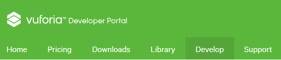
Pada Tab License Manager, tekan tombol “Add License Key”.
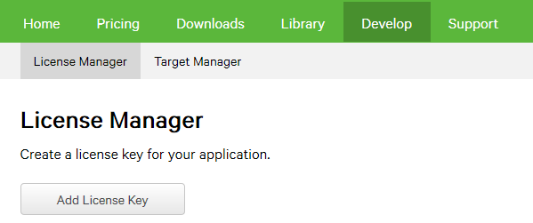
Pada Menu Add License Key ada beberapa pertanyaan yang harus di Isi:- Isikan pada Project Type -> Development (Jangan pilih yang lain, jika tidak ingin membayar lisensi)
- Isikan pada Project Details -> App Name berupa nama dari aplikasi yang akan dibuat, dalam praktikum ini akan diberi nama “ARHello”.
- Centang pada Project Details -> License Key-? Develop-No Charge
- Kemudian klik Next
Jika sudah, maka akan keluar menu konfirmasi lisensi seperti gambar dibawah ini:
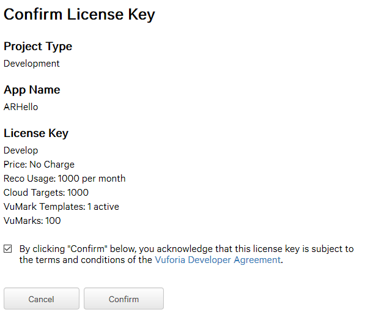
Kemudian centang Vuforia Developer Agreement dan klik tombol Confirm. Perhatikan bahwa, jika proses permintaan lisensi berhasil maka lisensi list akan bertambah dengan status ”Active”.
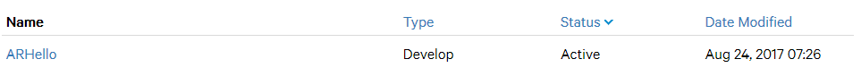Didalam List lisensi terdapat tulisan ARHello yang sebetulnya adalah hyperlink. Klik pada tulisan tersebut, sehingga akan muncul detail lisensi seperti gambar berikut:
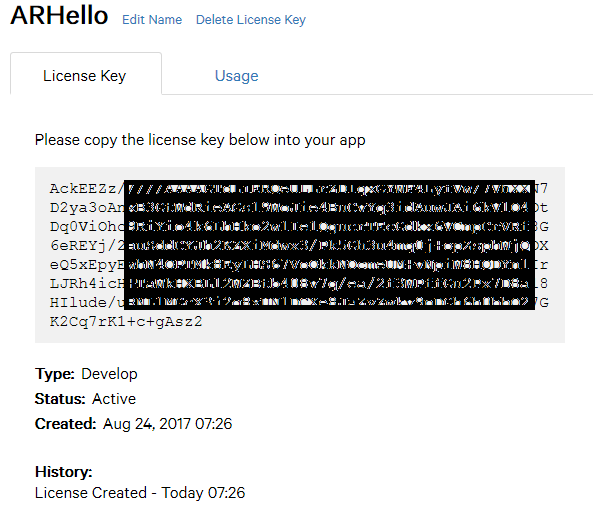
Copy tulisan aneh “Ack….z2” kedalam suatu file lisensi.txt karena kita akan menggunakannya saat unity sudah terhubung dengan Vuforia SDK.Buat database baru didalam Target Manager (Develop -> Target Manager).
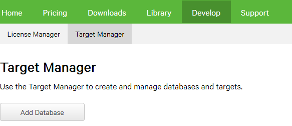Klik tombol “Add Database”, Isikan Name “targetcoba” dengan Type “Device”. Kemudian
Klik Create.
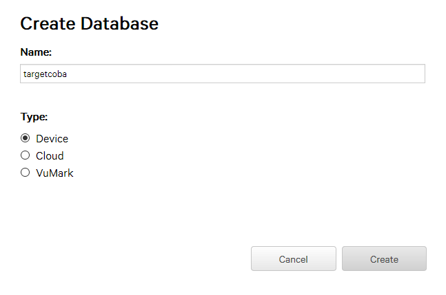Klik “targetcoba” pada list untuk melihat detail database targetcoba.
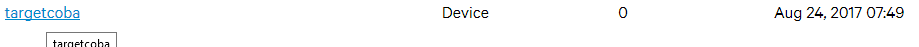Pada halaman detail database targetcoba, klik Add Target.
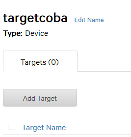Masukkan gambar logo_udinus.png.
Isi width = 50 dan name = “logo_udinus”, seperti yang terlihat pada gambar berikut:

Klik tombol Add. Ternyata terdapat error gambar tidak valid. Kita harus mengedit gambar dengan 24 bit JPG atau PNG untuk gambar RGB atau 8 bit gambar grayscale.
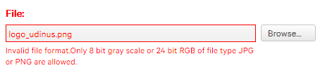Ganti gambar dengan logo_udinus24.png, dan klik tombol Add.
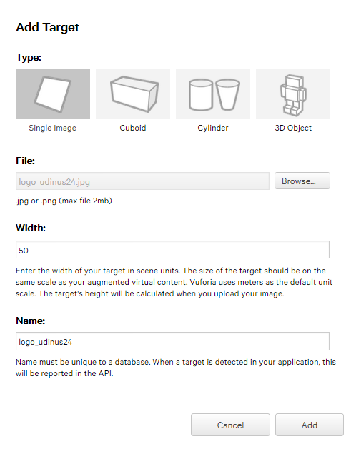Jika sudah berhasil, maka akan muncul di target list. Centang logo_udinus24, kemudian klik tombol Download Database (1) 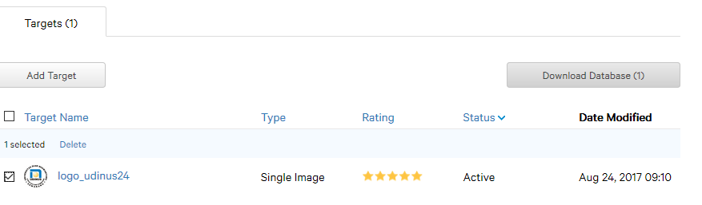
Akan muncul box dialog, pilih Unity Editor dan klik tombol Download.
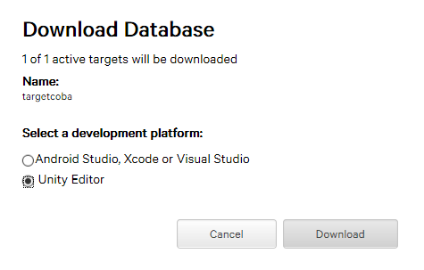Simpan file target kedalam direktori yang diinginkan.
Buka editor Unity. Buat project baru 3D dengan nama “CobaARVuforia”.
Buka kembali web: https://developer.vuforia.com/downloads/sdk.
Pilih yang “Download for Unity”. Jika ditanya term of use klik I Agree.
Pastikan project CobaARVuforia masih terbuka.
Double klik pada file yang tadi di download (vuforia-unity-6-2-10.unitypackage).
Pada editor unity akan muncul box seperti dibawah ini:
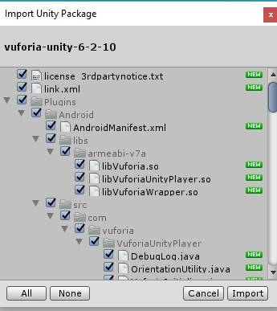
Klik tombol “All”, kemudian klik tombol “Import”. Tunggu beberapa saat.Sekarang, kita akan mencoba menggunakan asset gratis yang bisa di cari di Unity Asset Store.
Buka unity assets store dengan mengakses menu tab, window -> Asset Store.
Pada halaman Asset Store, isikan “Red Samurai” pada pencarian.
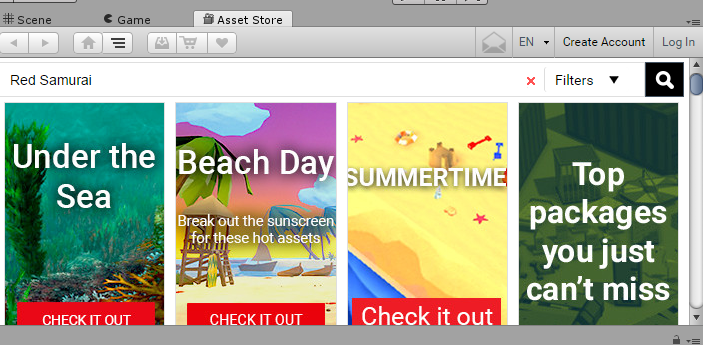Cari yang lisensinya FREE,
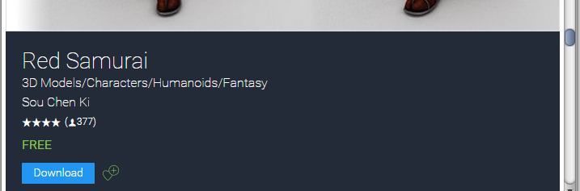Kemudian klik download. (jika ditanya login kea kun unity, silahkan login terlebih dahulu kemudian klik download lagi)
Tunggu beberapa saat sampai muncul dialog import seperti ini:

Klik All dan Import.
Sekarang ke hierarchy window. Hapus objek Main Camera.
Masukkan prefab ARCamera yang ada di Assets->Vuforia->Prefabs, Tarik kedalam hierarchy window.
PAstikan transformasi posisi x,y,z = 0 dan rotasi x = 90, y dan z = 0.
Simpan scene terlebih dulu dengan nama “Main”.
Klik objek ARCamera di Hierarchy window dan lihat pada Inspector.
Klik “Open Vuforia configuration”, masukkan App License Key seperti pada teks yang tadi disimpan di file lisensi.txt.

Sekarang kita tambahkan objek ImageTarget. Prefab dari objek ini dapat dicari di project window Assets-> vuforia->Prefabs.
Tarik dan masukkan ImageTarget pada scene atau hierarchy window. Atur pada posisi x=0,y=-50, dan z=0.
Import file database target yang kita download tadi (targetcoba.unitypackage) dengan cara double klik pada file tersebut.
Klik pada objek ImageTarget, lihat pada inspector. Klik Database “—EMPTY–” menjadi target coba.
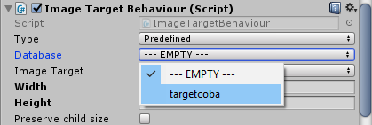Sekarang kita telah selesai mengatur Camera AR dan Target AR, tetapi belum menambahkan objek 3D apabila target sudah terdeteksi oleh kamera. Tambahkan model 3D samurai yang disimpan pada prefab. Akses prefab samurai di project window Assets->Prefab->Samuzai.
Tarik prefab samuzai ke hierarchy window atau scene view didalam ImageTarget.
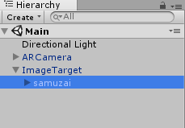Ganti skala samuzai x,y,z=0.5. Pastikan posisi dan rotasi x,y,z = 0 semua.
Masuk pada Inspector ARCamera, Klik Open Vuforian Configuration.
Cari Dataset, centang Load targetcoba Database dan Activate.

Buka Build Settings (File->Build Settings). Tambahkan scene Main pada build Setting.
Klik Android kemudian switch platform. Tunggu beberapa saat.
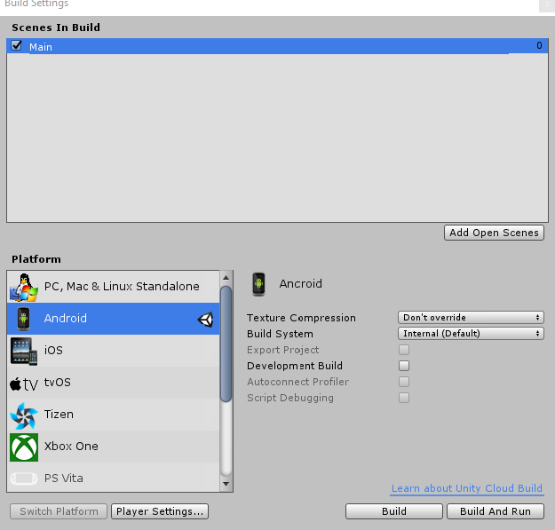Klik Player Setting, rubah Package Name menjadi “com.ar.udinus” lalu ENTER.
Pastikan konfigurasi Android SDK sudah benar, Klik tombol Build. Simpan APK dengan nama sembarangAR.apk.
Mainkan di smartphonemu.
KUMPULKAN:
Screenshoot saat AR dijalankan di smartphone dengan nama sc_13_01.jpg. Pastikan sudah mencetak gambar logo udinus dan capture dengan kamera smartphone-mu.
Markerless AR
Markerless AR merupakan salah satu jenis AR yang di kembangkan tanpa sebuah marker. Contoh dari aplikasi AR semacam ini pernah di implementasikan pada Game Niantic yaitu Pokemon Go. Namun demikian, perangkat untuk markerless AR ini harus memiliki sensor gyroscope dan accelerometer. Pada praktikum kali ini, mahasiswa akan membuat Markerless AR dengan unity.
Menyiapkan Kamera dan Area bermain
Hal yang pertama kali perlu diperhatikan dalam pembuatan Markerless AR dengan unity ini adalah menyiapkan objek yang nantinya akan digunakan untuk render kamera. Selain itu, perlu dibuat area bermain dimana dari area tersebut akan memunculkan objek-objek virtual.
PRAKTIKUM:
Buka Unity 5.6.3,buat project baru beri nama “MarkerlessAR”. Simpan scene dengan nama “Main”.
Klik Main Camera yang ada di hierarchy. Pada Inspector, rubah transformasi rotasi sumbu x=90. Pastikan posisi main camera adalah x=0, y=1, dan z=-10.
Buat objek quad lalu rubah nama menjadi “ArCamFeed” lakukan rotasi pada sumbu x =90. Setelah itu, turunkan object “ArCamFeed” pada posisi x=0,y=-400, dan z=-10 serta rubah scale x=1000,y=1000, dan z=1000. Kemudian jadikan “ArCamFeed” ini sebagai children dari “Main Camera”.
Buat objek Cube, lalu rubah nama menjadi “PlayArea”. Rubah posisi objek ini menjadi x=0,y=135, dan z=-10. Rubah transformasi rotasi menjadi x=90,y=0,z=0 dan transformasi scale menjadi x=1000, y=1000, dan z=1000. Jangan centang (uncheck) mesh renderer, mesh filter dan box collider. Objek PlayArea ini tidak lain hanyalah sebagai pembatas area dimana objek-objek virtual akan muncul.
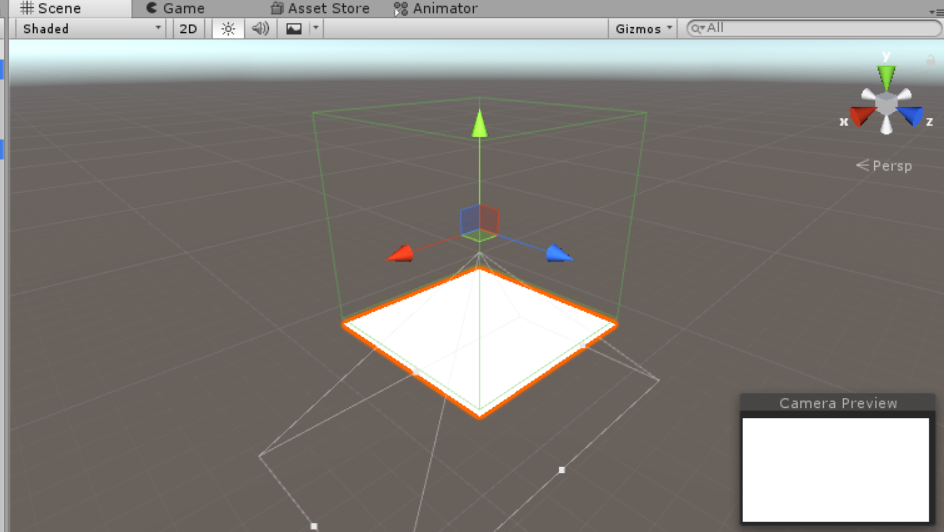Ekstrak file assets.rar dari materi praktikum yang diberi dosen dimana nanti akan terdapat dua folder dengan nama Model dan Sprite. Didalam folder Model terdapat file model 3D dengan nama “Wraith Raider Starship”. Seret “Wraith Raider Starship” ke project view pada unity dan tunggu sampai proses import selesai. Seret “Wraith Raider Starship” yang ada di project view ke scene atau hierarchy. Posisikan objek ini ke x=200,y=50, dan z = 370. Rubah transformasi rotasi pada inspector dengan x=-0, y=90, dan z = 0.
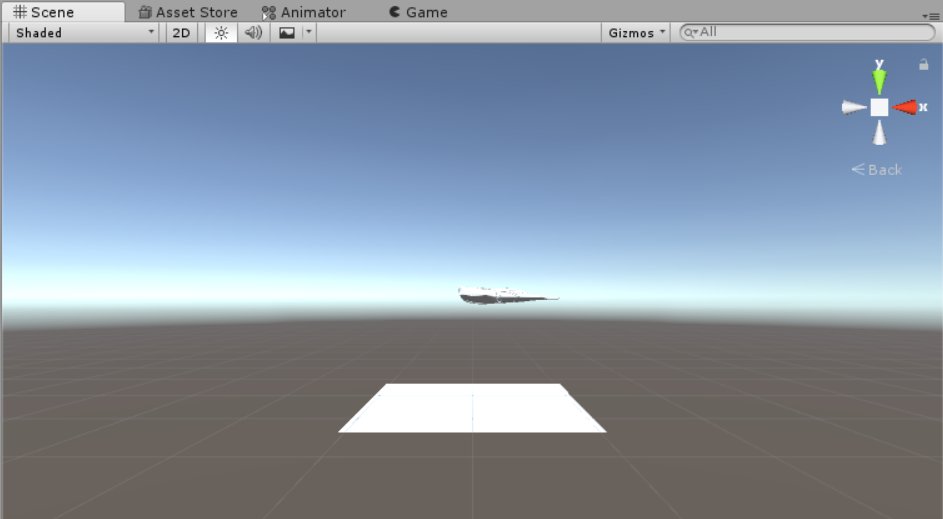
Render Webcam
Setelah kamera, ARCamFeed dan PlayArea disiapkan sekarang saatnya kamu memberi ARCamFeed kemampuan untuk mengambil tangkapan gambar dari kamera smartphone. Untuk itu diperlukan mekanisme Render texture yang akan diterapkan pada objek ARCamFeed. Render texture adalah jenis texture yang untuk menampilkan sesuatu yang ditangkap oleh webcam (sensor kamera pada smarphone).
PRAKTIKUM:
- Buat c# script dan beri nama “ArCamSync” pada game objek Main Camera. Deklarasikan variabel arCamFeed untuk mendapatkan referensi ke objek ARCamFeed dan variabel camRotation untuk rotasi kamera.
public GameObject arCamFeed;
Quaternion camRotation; - Didalam method Start() deklarasikan variabel webCamText untuk menampung teksture yang diambil dari sensor kamera. Setelah itu jalankan webcam texture dan aktifkan gyroscope sensor:
void Start () {
WebCamTexture webCamText = new WebCamTexture();
arCamFeed.GetComponent<MeshRenderer>().material.mainTexture
= webCamText;
webCamText.Play();
Input.gyro.enabled = true;
} - Pada method Update, buat orientasi rotasi webcam sama dengan rotasi dari Input Gyroscope.
void Update () {
Quaternion camRotation = new Quaternion(Input.gyro.attitude.x,
Input.gyro.attitude.y, -Input.gyro.attitude.z,
-Input.gyro.attitude.w);
gameObject.transform.localRotation = camRotation;
} - Isikan ARCamFeed pada Inspector Main Camera di komponen script Ar Cam Sync.
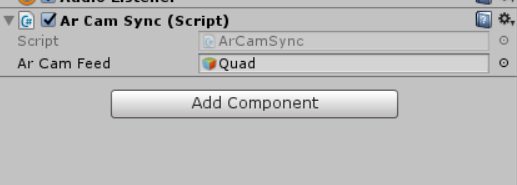
Menyiapkan HUD dan Pergerakan Pesawat
Setelah webcam sudah dapat menangkap gambar lingkungan nyata, siapkan head up display atau HUD. HUD yang akan ditampilkan hanya gambar kokpit pesawat yang seakan-akan player sedang berada didalam pesawat player. Selanjutnya buat objek pesawat musuh (Wraith Raider Starship) berjalan maju mundur supaya pesawat tersebut terlihat melayang di dunia nyata.
PRAKTIKUM:
- Didalam folder assets yang diberikan oleh dosen, terdapat folder Sprite. Ambil gambar cockpit.png dan masukkan ke project view unity.
- Klik cockpit pada project view dan lihat Inspector. Rubah “texture type” bernilai Sprite (2D and UI). Jika sudah, klik Apply yang berada di Inspector bagian bawah.
- Buat UI Image dengan cara, klik kanan pada hierarchy -> UI -> Image kemudian beri nama “kokpit” .
- Pastikan posisi x,y,z dari UI kokpit bernilai 0 dan anchor berada pada middle dan center. Isikan width = 900 dan Height = 400 pada Inspector UI Kokpit.
- Buat C# baru beri nama simpleWandering pada game objek Wraith Raider Starship.Jadi nanti musuh akan bergerak maju mundur seperti itu.
public float timeWander;
float nTimeWander;//waktu ganti arah
// Use this for initialization
void Start () {
nTimeWander = timeWander;
}
// Update is called once per frame
void Update () {
nTimeWander-=.1f;
if(nTimeWander>timeWander/2){
transform.Translate(Vector3.forward);
}else{
transform.Translate(Vector3.back);
}
if(nTimeWander<0f){
nTimeWander = timeWander;
}
} - Tambahkan Rigidbody pada Wraith Raider Starship. Jangan centang / uncheck Use Gravity dan centang Is Kinematic pada komponen Rigidbody.
- Isikan Time Wander pada Inspector Wraith Raider Starship dengan nilai 50.
- Tahap terakhir adalah publih ke platform android. Lihat tutorial ini pada pertemuan-pertemuan sebelumnya.
KUMPULKAN:
Screenshoot game tab. Simpan dengan nama sc_13_02.jpg
REFERENSI
- Jacko, Julie A.; Andrew Sears (2003). Handbook of Research on Ubiquitous Computing Technology for Real Time Enterprises. CRC Press. p. 459.
- https://www.vuforia.com/
- https://www.vuforia.com/features.html
- https://www.sitepoint.com/how-to-build-an-ar-android-app-with-vuforia-and-unity/
- https://library.vuforia.com/articles/Solution/Getting-Started-with-Vuforia-for-Unity-Development.html
- http://wirebeings.com/markerless-augmented-reality.html
- https://free3d.com/3d-model/wraith-raider-starship-22193.html
- https://docs.unity3d.com/Manual/class-RenderTexture.html
Mekanisme Pengumpulan Praktikum Mingguan
Untuk setiap mahasiswa: Buat 1 folder beri nama NIM lengkap. Masukkan file screenshot sc_13_01 dan sc_13_02.jpg . Kemudian rar atau zip folder NIM kamu tadi dan kirimkan ke ketua kelas.
Contoh:A11200904997.rar
Untuk Ketua Kelas: Siapkan folder dengan nama Kode Kelas “_13” yang berisi kumpulan praktikum setiap mahasiswa. Lalu buat rar atau zip dan kirimkan ke email dosen.
Contoh: A114401_13.rar